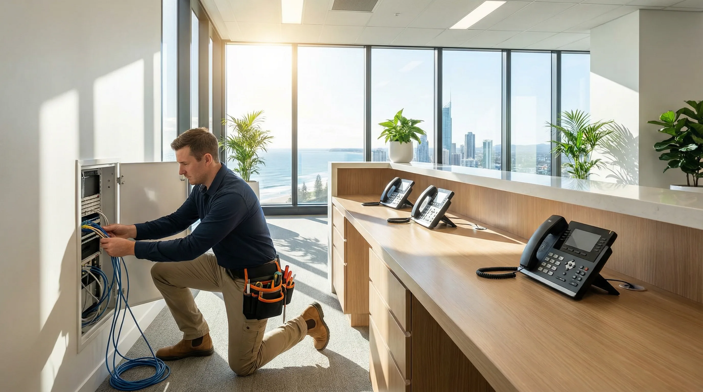
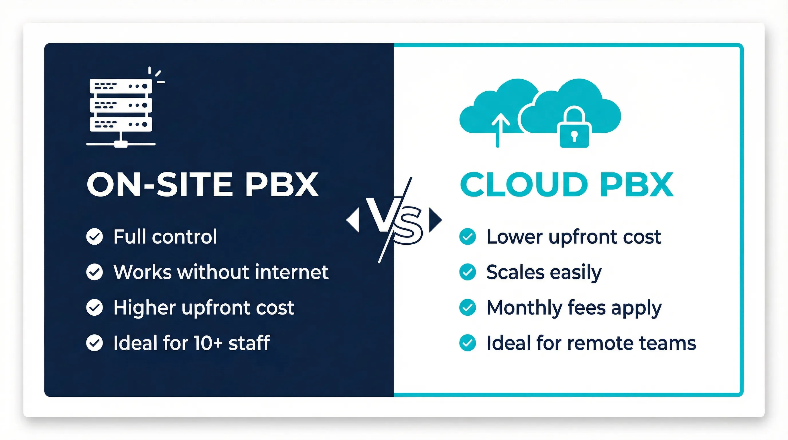
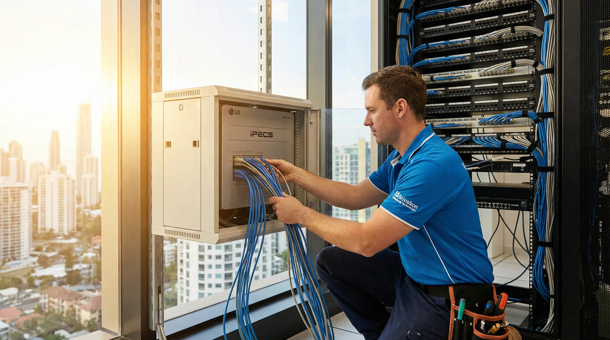
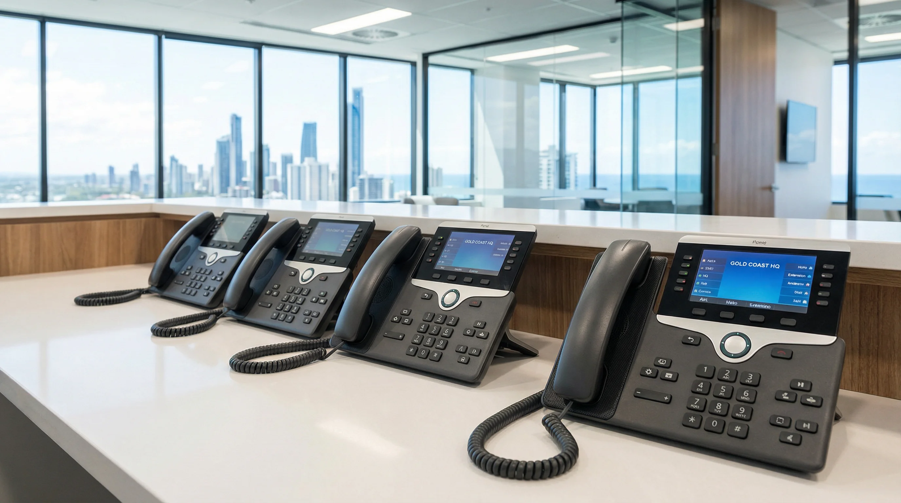

Need a new phone system for your Gold Coast business, or support for an existing one? bcom ICT supplies and installs on-site PBX and cloud PBX phone systems for Gold Coast businesses — and maintains and repairs existing systems from leading brands including Alcatel-Lucent, LG Ericsson, Panasonic and NEC. LG Ericsson is our primary brand for new PBX installations.
bcom ICT installs modern business phone systems and hosted VoIP solutions across the Gold Coast. We configure scalable PBX and VoIP systems to improve communication and reduce call costs.
Most Gold Coast businesses asking about a new phone system have the same first question — should we go on-site or cloud? The honest answer depends on your premises, team size, internet connection and how much control you want over your phone infrastructure. Here is what you need to know to make the right decision.
A physical PBX unit is installed at your Gold Coast premises and all call routing is handled on-site. Your phone system operates independently of your internet connection — if the internet goes down, internal calls and calls through PSTN lines continue to work.
On-site PBX is well suited to Gold Coast businesses that need reliable internal communication, have an existing phone line infrastructure, or operate in locations where internet connectivity is not guaranteed. Higher upfront hardware cost, but no ongoing monthly platform fees. We supply and install LG Ericsson systems for new on-site PBX installations.
Your phone system is hosted off-site and delivered over your internet connection. Handsets connect to the cloud platform rather than an on-site PBX unit — lower upfront cost and easy to add extensions as your Gold Coast business grows.
Cloud PBX is well suited to businesses with reliable internet, multiple locations that need to share a single phone system, or teams that need remote or mobile extensions. Monthly platform fees apply. Call quality depends on internet connection quality. We advise on the right cloud PBX platform for your Gold Coast business based on your team size and requirements.

The decision is rarely as simple as cost. A medical practice in Robina with eight staff and existing PSTN lines will almost always be better served by an on-site LG Ericsson PBX than a cloud platform — the system works independently of the internet, call quality is consistent, and the hardware pays for itself over time with no monthly platform fees. A small professional services firm in Southport with four staff and a strong NBN connection might find a cloud PBX more practical, particularly if staff sometimes work from home or need mobile extensions.
Internet reliability is a real factor on the Gold Coast. NBN quality varies between suburbs and even between buildings in the same street. If your business is in an older building in Nerang or Helensvale with inconsistent internet, putting your entire phone system on a cloud platform is a risk. An on-site PBX with PSTN or SIP trunk lines means your phones keep working regardless of what your internet connection is doing. We check this before recommending anything.
Sizing matters too. One of the most common problems we see is a phone system that was installed too small — a business that started with six handsets and now needs fourteen, but the original PBX unit cannot accommodate the expansion. LG Ericsson systems are modular, which means they can be expanded by adding cards and handsets without replacing the core unit. When we size a new system for your Gold Coast business, we account for where you are now and where you are likely to be in three to five years.
Not sure which is right for your Gold Coast business? Call 07 3041 8993 and describe your premises, team size and how your phones are currently set up. We will give you a straight recommendation based on your situation — not a default answer or a sales pitch for the more expensive option.
We supply, install and support business phone systems for Gold Coast businesses — new installations and existing system support. Our primary brand for new PBX installations is LG Ericsson. For maintenance and repairs we also support Alcatel-Lucent, Panasonic and NEC systems. Related services include PBX system installation Gold Coast, VoIP phone system setup Gold Coast and phone line installation Gold Coast.

Supply, installation and full configuration of new business phone systems for Gold Coast businesses — on-site PBX or cloud PBX. LG Ericsson systems supplied for new PBX installations. Handset programming, line configuration and staff walk-through included.
LG Ericsson on-site PBX systems installed at your Gold Coast business premises — correctly sized for your current team with room to expand. Full cabling, handset installation and system configuration included.
Cloud-hosted business phone system configured and deployed for your Gold Coast business. Handsets programmed, extensions set up and call routing configured — ready to use from day one.
Fault diagnosis, repairs and maintenance on existing Alcatel-Lucent, LG Ericsson, Panasonic and NEC phone systems at Gold Coast businesses — without replacing hardware that is still serviceable.
Adding extensions, reconfiguring lines or expanding an existing Gold Coast business phone system — handled correctly so your existing system continues to work without disruption.
Hunt groups, call forwarding, auto-attendant, voicemail and feature configuration on existing and new business phone systems at Gold Coast premises — programmed to match how your business actually operates.
Our primary brand for new PBX installations. Reliable, scalable systems suited to Gold Coast small and medium businesses. Supplied and installed for new system projects.
Alcatel-LucentSupported for maintenance, repairs, handset additions and configuration changes on existing systems at Gold Coast business premises.
PanasonicSupported for maintenance, repairs, handset additions and configuration changes on existing systems at Gold Coast business premises.
NECSupported for maintenance, repairs, handset additions and configuration changes on existing systems at Gold Coast business premises.
Have a brand not listed here? Call 07 3041 8993 and describe your system — we will advise whether we can support it.
A business phone system is not something you want to get wrong and fix later. A poorly installed PBX — one that was sized for the wrong number of lines, cabled without proper labelling, or configured without hunt groups and voicemail set up correctly — creates daily friction for your staff and callers. Missed calls, transfers that drop, voicemail that nobody knows how to access. These are not minor inconveniences. For a Gold Coast business that relies on the phone to bring in work, they cost money.
The LG Ericsson iPECS range is the system we recommend for most new on-site PBX installations at Gold Coast businesses. It is a proven platform that handles everything from a four-handset office in Burleigh Heads to a forty-handset operation in a Robina commercial building. The hardware is reliable, the feature set covers everything a small or medium business needs — call queuing, auto-attendant, hunt groups, voicemail to email, DECT cordless handsets — and the modular design means you can add capacity without replacing the core unit.

A lot of Gold Coast businesses are running Alcatel-Lucent, Panasonic or NEC phone systems that are five, eight or even ten years old. These systems are often perfectly serviceable. The hardware is built to last, and in many cases the only reason a business is considering a replacement is because a handset has failed, a line has stopped working, or nobody on staff knows how to change the voicemail greeting. These are not reasons to replace the whole system.
We carry out fault diagnosis and repairs on Alcatel-Lucent OmniPCX and OmniOffice systems, Panasonic KX series PBX units, NEC UNIVERGE and SL series systems, and LG Ericsson iPECS platforms. If a handset has failed, we can replace it. If a line card has developed a fault, we can diagnose and replace it. If the system needs reprogramming after a staff change or office reconfiguration, we handle that too. The cost of a repair or service call is almost always a fraction of the cost of a new system.
There are situations where replacement makes sense — when the system is genuinely at end of life, when parts are no longer available, or when the business has grown beyond what the existing hardware can support. We will tell you honestly if that is the case. But we will not recommend a new system to a Coomera business with a functioning Panasonic KX-TDE100 just because it is easier to sell one.
The phone system itself is only part of the picture. The cabling infrastructure that connects handsets to the PBX, and the PBX to your phone lines, needs to be done properly. Poorly run cabling — unlabelled, unmanaged, or run through areas where it picks up interference — causes call quality problems that are difficult to diagnose after the fact. We run structured cabling for phone systems using Cat5e or Cat6 to the same standard as data cabling, with all runs labelled and documented.
For Gold Coast businesses moving into a new tenancy, fitting out a new floor, or expanding into additional office space, we plan the phone line cabling as part of the overall installation rather than as an afterthought. Getting the cabling right at fit-out stage is far less disruptive and less expensive than trying to add it later. We work across commercial premises throughout the Gold Coast — from small offices in Varsity Lakes to larger commercial buildings in Southport and Broadbeach.
Most new business phone system installations on the Gold Coast now use SIP trunking rather than traditional PSTN lines. SIP trunks deliver your phone lines over your internet connection, which typically means lower call costs and more flexibility around the number of simultaneous calls you can handle. An LG Ericsson iPECS system configured with SIP trunks gives you the reliability of an on-site PBX with the cost benefits of VoIP calling.
For businesses that want a fully cloud-based phone system, we configure and deploy cloud PBX platforms with VoIP handsets. Staff can use desk phones in the office, softphones on their laptops, or mobile apps on their phones — all connected to the same system with the same phone number. This works well for Gold Coast businesses with staff who split time between the office and working from home, or for businesses with multiple locations that need to share a single phone system and transfer calls between sites.
Call 07 3041 8993 to discuss your Gold Coast business phone system requirements. We will ask the right questions, give you a straight recommendation, and provide a clear quote before any work is scheduled.
bcom ICT (ABN 92 636 893 108) supplies and installs business phone systems for businesses across the Gold Coast — Southport, Robina, Burleigh Heads, Nerang, Helensvale, Coomera and Varsity Lakes. We also provide maintenance, repairs and system support for existing Alcatel-Lucent, LG Ericsson, Panasonic and NEC phone systems at Gold Coast business premises. For related services see our telecommunications services Gold Coast hub page. Call 07 3041 8993 to discuss your phone system requirements.
Or call 07 3041 8993
Here is what the process looks like from your first call to a fully working phone system at your Gold Coast business.
Call 07 3041 8993 and tell us about your Gold Coast business — how many staff, how many handsets you need, whether you have existing phone lines and cabling, and whether you are replacing an existing system or starting from scratch. We ask the right questions to determine whether on-site PBX or cloud PBX is the better fit and provide a clear quote before any work is booked.
We provide an itemised quote covering the system, handsets, cabling if required and installation labour. No hidden costs — what we quote is what you pay unless the scope changes and you approve it first. Installation date confirmed once the quote is accepted.
We install the PBX unit or configure the cloud platform, run cabling where required, install and program all handsets, configure your lines, hunt groups, voicemail and call routing. Installation is carried out with minimum disruption to your Gold Coast business — we plan the work to avoid your busiest periods where possible.
We test every handset and every line before signing off. Internal calls, external calls, transfers, voicemail and any programmed features all confirmed working. We walk your staff through the system before we leave so your team is confident using it from day one.
New system installations typically completed in a single visit. Existing system repairs quoted and scheduled after fault diagnosis.
We supply and install on-site PBX systems (LG Ericsson iPECS is our primary brand for new installations) and cloud PBX / hosted VoIP for Gold Coast businesses. We also repair, maintain, expand and reconfigure existing Alcatel-Lucent, Panasonic and NEC PBX systems. Every quote follows a site assessment so the system is sized correctly for your premises and team. Call 07 3041 8993 to arrange a no-obligation phone system assessment.
It depends on internet reliability at your premises, whether you have multiple sites, your team size, and whether you prefer a capital purchase or a monthly per-user fee. On-site PBX suits businesses with reliable existing phone lines and a single location. Cloud PBX suits businesses with good NBN, multiple Gold Coast sites that need to share one phone system, or teams that need to make and receive business calls from mobile or laptop. Call 07 3041 8993 to talk through your situation — we will recommend on-site, cloud or hybrid based on what fits.
Yes. We carry out fault diagnosis, repairs, handset additions, line reconfiguration and feature changes on existing Alcatel-Lucent OmniPCX and OmniOffice systems, Panasonic KX-TDA, KX-NS and KX-TDE units, and NEC UNIVERGE SV8100, SV9100 and SL2100 PBX systems at Gold Coast businesses. If your system is at genuine end of life or parts are no longer available, we will tell you and quote a like-for-like replacement rather than throwing money at a system that cannot be brought back. Call 07 3041 8993 and describe what is wrong.
Yes. We can port existing Gold Coast business numbers to a new on-site PBX or cloud PBX platform — your clients keep dialling the same number. Number porting typically takes 5–10 business days depending on your current carrier; we manage the carrier paperwork for you and time the cutover so you do not lose calls. If you are migrating away from an old PSTN line, we will coordinate the line disconnection so it happens after the port is confirmed.
Yes. One of the main reasons Gold Coast businesses move to cloud PBX is to put two or more sites onto a single phone system — internal extension dialling between locations, shared hunt groups and one central voicemail. We size the cloud PBX licensing, configure each site, install handsets and confirm call quality on each site’s internet connection before cutover. On-site PBX can also link multiple sites via SIP trunking where cloud is not preferred.
When you choose bcom ICT, you are partnering with a Gold Coast local business that prioritises your needs over sales targets. We provide independent advice with no vendor commissions, ensuring the solutions we recommend are genuinely the best fit for your situation. We always provide a transparent, fixed-price quote before any work begins. With 7-day availability, we are here when you need us most.
LG Ericsson is our primary brand for new PBX installations — we know these systems in detail. Correctly sized for your Gold Coast business from day one, with room to add extensions as you grow.
If your existing Alcatel-Lucent, Panasonic or NEC system is working, there is no reason to replace it. We repair, maintain and expand existing systems at Gold Coast businesses — saving you the cost of a full replacement when you do not need one.
On-site PBX or cloud PBX — we give you a straight recommendation based on your Gold Coast premises, team size and internet connection. Not a default answer, not a push toward the more expensive option.
We are based on the Gold Coast and all installation and support work is done by our own technicians — no interstate contractors, no subcontracted labour for a job that requires care and precision.
Last updated: March 2026